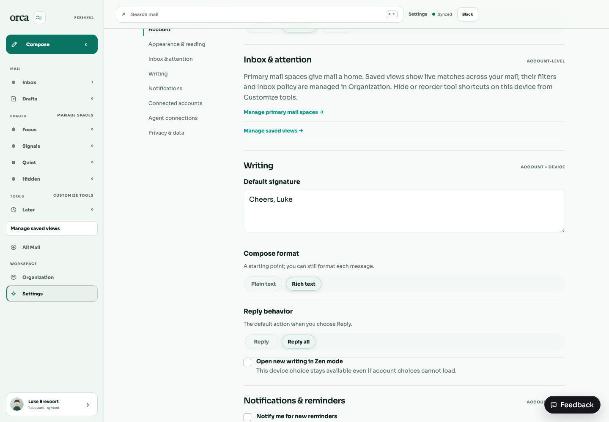
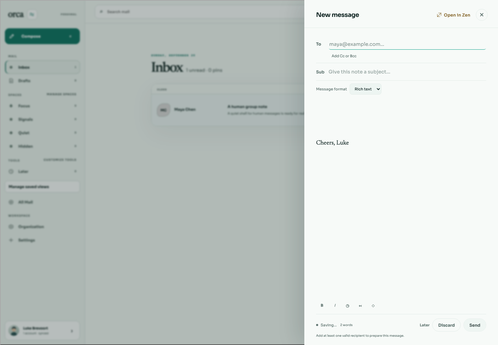
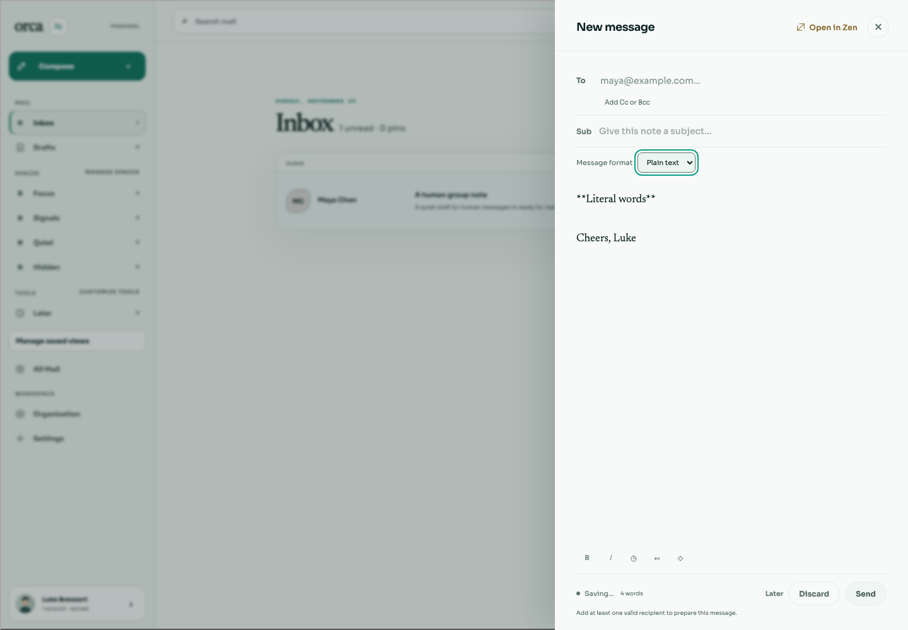
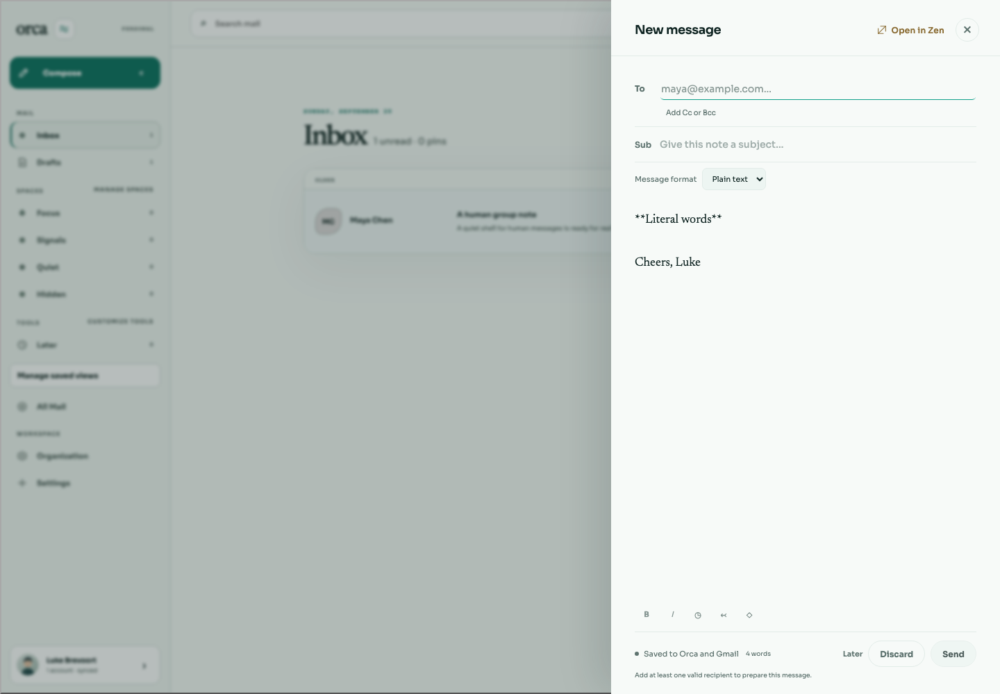
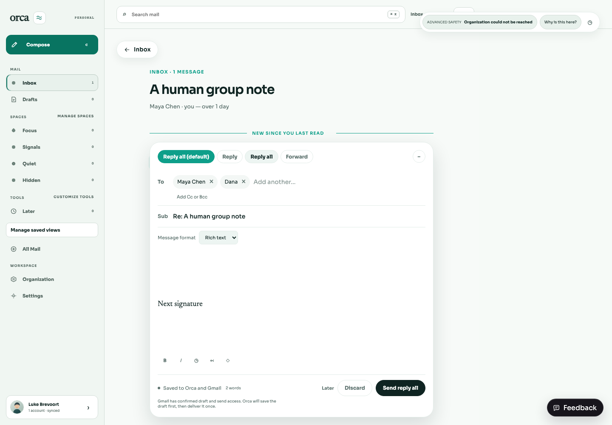
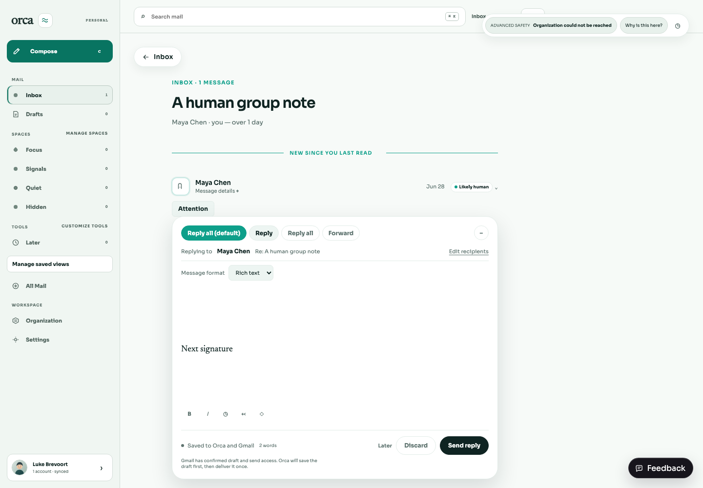
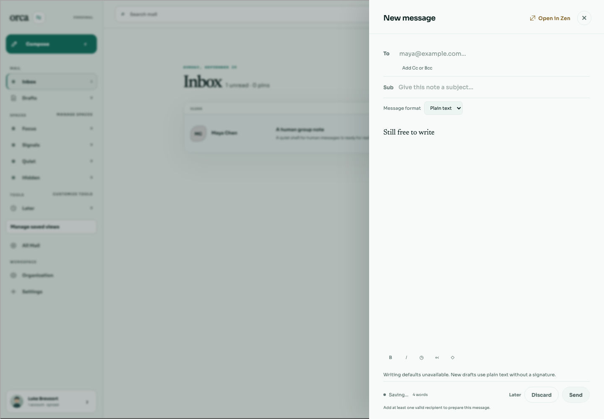
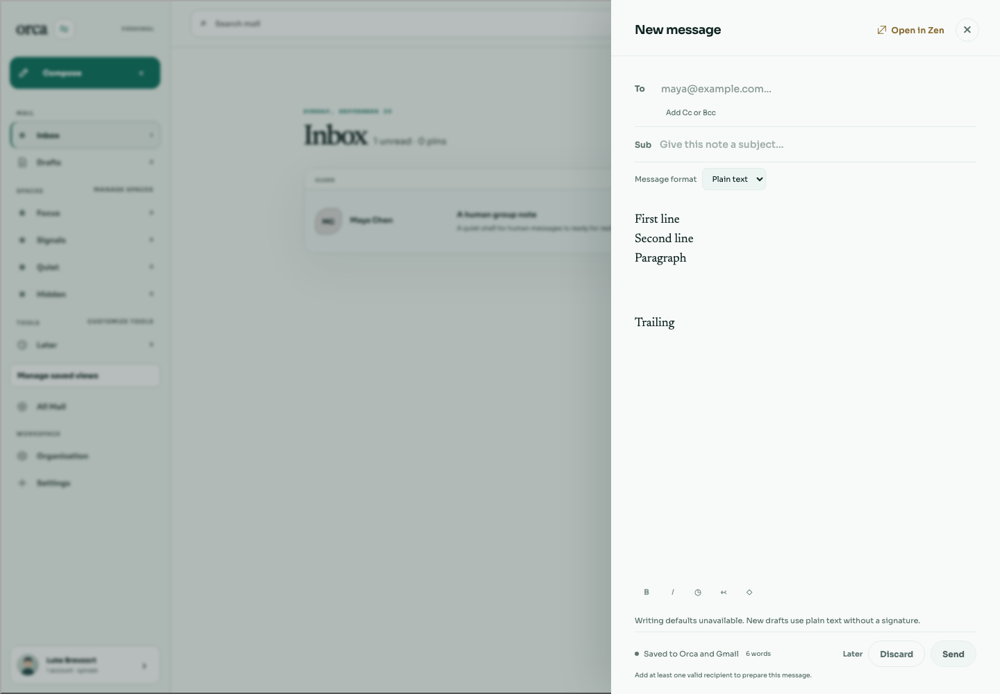
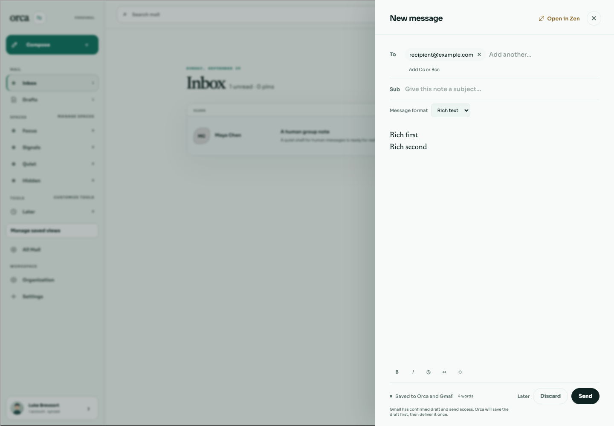

Settings saved
Successful save emits invalidation. The new values apply on the next draft.
{kind=link}

BRE-419 · 20 September 2026 · isolated authenticated fixtures
Saved signature, starting format, and primary reply behavior now reach writing. Existing and recovered content stays intact, and explicit Reply / Reply all remain available. The visible per-draft format choice preserves the body text when switched.
· Machine-readable browser results
Successful save emits invalidation. The new values apply on the next draft.

Signature appears once, with rich format visibly selected.

Literal Markdown stays literal; rich commands are disabled and format has visible keyboard focus.

A later Settings change leaves the saved body and plain format unchanged.

Discard and reopen picks up the updated signature without a hard refresh.
The primary action names Reply all. To/Cc are deduplicated and exclude the account owner.

The explicit Reply choice targets the original sender only.

A small scoped notice explains defaults; typing remains available.

Real Chrome Shift+Enter, Enter, multiple blank lines, trailing spaces and the terminal newline survive autosave and mocked send exactly.

Rich Shift+Enter retains a newline in normalized text. The existing renderer writes separate HTML paragraphs; other rich Markdown normalization is unchanged.

Plain expected text (escaped): "First line\nSecond line\nParagraph\n\n\nTrailing \n" Plain HTML: null Rich expected text (escaped): "Rich first\nRich second" Rich HTML: <p>Rich first</p><p>Rich second</p>
Tests exercise late preference arrival, typing then deleting, pending recipients, account switches, recovered empty and rich drafts, signatures exactly once, Settings invalidation races, initial reply fields while loading, literal/rich serialization, native soft line breaks and whitespace, actual default-reply-all recipients, BRE-420 transitions and BRE-421 conflict recovery.
bun test apps/web/src bun run --filter @orca/web typecheck bun run --filter @orca/web build WRITING_KEYBOARD=1 PLAYWRIGHT_MODULE=/path/to/playwright/index.mjs node apps/web/scripts/check-writing-preferences.mjs
Preferences belong to the authenticated Orca user; a caller must supply its authorized account. They are not independent per-provider-account settings. There is no global or browser-storage preference cache. Local drafts retain their applied body and format for recovery.
New drafts use safe plain defaults while preferences load. Late defaults never overwrite edits. Server draft recovery follows the existing body contract: non-null HTML means rich, null HTML means plain, including server-only legacy drafts. Local legacy drafts with missing format retain their previous rich interpretation. Body text is preserved verbatim; there is no schema migration.
Organization authority was not fully simulated in these writing fixtures; reader screenshots may show its unrelated unavailable indicator. Real OAuth/provider behavior and delivery were intentionally outside this browser run. Mocked save/send serialization is covered by integration tests.
{kind=link}
{kind=link}
{kind=link}
{kind=link}
{kind=link}
{kind=link}
{kind=link}
{kind=link}
{kind=link}